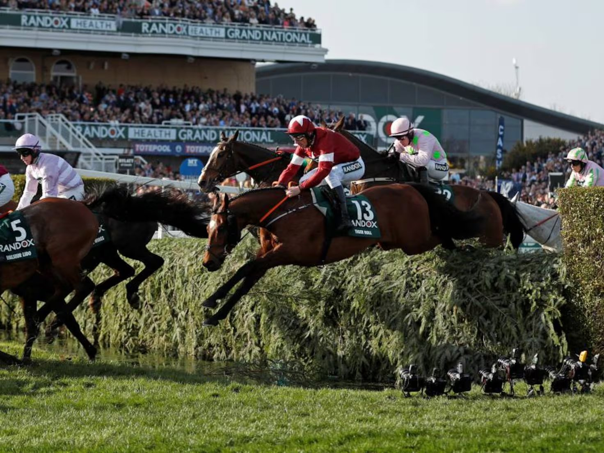

Aintree suma una jornada el 6 de noviembre tras las suspensiones de Exeter y Wincanton
La BHA convierte la reunión de obstáculos de Aintree en dos días y transforma la cita de Sandown del 8 de noviembre en un programa exclusivo de vallas.

La British Horseracing Authority (BHA) confirmó este martes la incorporación de una jornada adicional de obstáculos en Aintree el viernes 6 de noviembre, con lo que el hipódromo de Merseyside pasa a acoger una reunión de dos días.
El ajuste responde a la cancelación de las jornadas previstas en Exeter, el viernes 6 de noviembre, y en Wincanton, el sábado 7 de noviembre.
Aintree recoge tres pruebas de esas dos reuniones perdidas: la Haldon Gold Cup, la Boodles Rising Stars Novices Chase y un hándicap de steeplechase sobre 3 millas y 1 furlong.
Este último está sujeto a la política de la BHA sobre Premier Handicaps de cierre anticipado que cambian de sede. Las inscripciones originales quedan anuladas, de modo que los entrenadores deberán formalizar nuevas inscripciones para la carrera de Aintree antes de las 12:00 del sábado 31 de octubre.
El nuevo calendario también mueve el Class 3 Novices' Limited Handicap Chase, que estaba programado en Aintree para el sábado, al viernes.
La BHA anunció además cambios en Sandown. La jornada de obstáculos del domingo 8 de noviembre se disputará únicamente sobre vallas. Para sustituir las carreras de steeplechase suprimidas se han convocado dos nuevas pruebas de vallas.
Por Martín Larrañeta